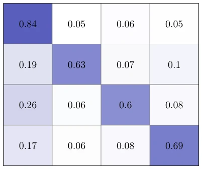

This paper applies Transformer to social media depression detection. Although it capitalizes on the popularity of BERT, it is essentially text classification, having little to do with robot actions and perception in Embodied AI, considered as "self-indulgence" in the NLP field. The authors devised a DistilBERT weighted average of hidden states, concatenated with some metadata, and finally fed into an MLP. The performance is acceptable, F1 84%, but the dataset consists of only a few thousand Reddit posts, and generalization ability is questionable. Claiming it solves "traditional algorithms cannot capture complex text patterns" is somewhat exaggerated, after all, current LLMs can achieve this with casual fine-tuning, but this paper does not mention large model fine-tuning, only using DistilBERT. Data augmentation used EDA, which is considered a routine operation. Overall, it is a standard NLP classification task; do not expect it to control robots to comfort depressed users.
The number of depression patients is increasing; WHO data shows anxiety and depression have risen significantly [1]. Social media has become an emotional outlet, but traditional ML such as LR, SVM, etc., struggle to capture deep semantics [3]-[7]. While existing deep learning models like LSTM and CNN are effective, Transformer models like BERT, despite being widely used, often overlook the integration of auxiliary features (metadata/linguistic markers) [8], [21]-[25]. Many models over-rely on pre-trained corpora, perform poorly on unique cases, and ignore the role of auxiliary features in understanding text nuances. This study aims to combine Transformer context embeddings with auxiliary features to address the shortcomings of existing methods in accuracy and robustness.
The overall process is: Data Augmentation -> Preprocessing -> Feature Extraction -> Transformer Encoding -> MLP Classification. First, EDA methods (insertion, substitution) are used to balance the dataset. Preprocessing includes lowercasing, removing URLs, removing punctuation, etc. Feature extraction is divided into three parts: antidepressant drug references, EmoRoBERTa sentiment, CardiffNLP sentiment analysis. The core innovation lies in the Transformer part, using the last four hidden states of DistilBERT, performing weighted averaging via trained weights (H_avg = sum(alpha_i * H_i)), rather than simply taking the last layer or CLS token. The weighted CLS token is concatenated with auxiliary features, subjected to Dropout regularization, and input into MLP (Linear-ReLU-Linear) for classification. This design utilizes Transformer's context understanding, and flexibly integrates semantic information at different levels through a weighting mechanism, avoiding the limitations of a single layer.
Uses Depression Severity Dataset (Reddit posts, 4 levels). Baselines include Ilias [50]'s multi-task learning, Yang [51]'s BERT, ALBERT+LSTM, etc. Evaluation metrics are Weighted Precision, Recall, F1. Experiments show that after adding data augmentation, weighted F1 improved from 72.59% to 84.15%. Ablation experiments verified the effectiveness of each part of the architecture. Main results reached 84.26% Precision, 84.18% Recall, 84.15% F1. The confusion matrix shows the model identifies categories relatively evenly, but few samples in the severe depression category may affect performance in extreme cases.

Fig. 2. Confusion matrix of the best performing model on multi-class depression classification